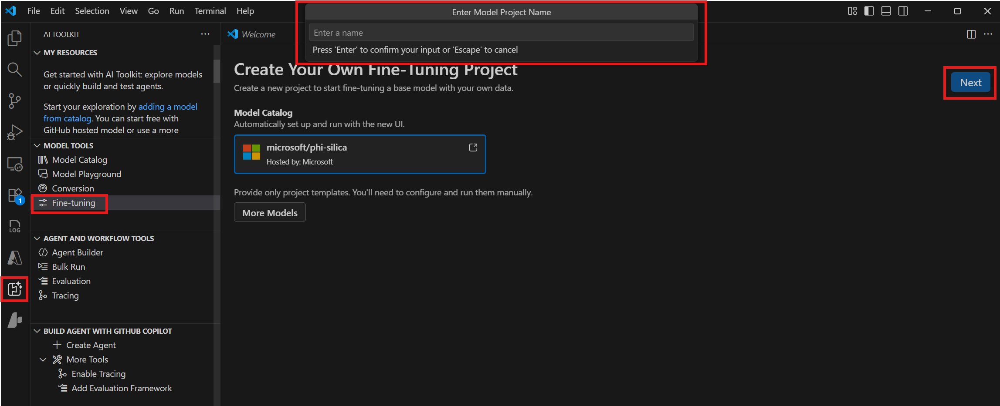
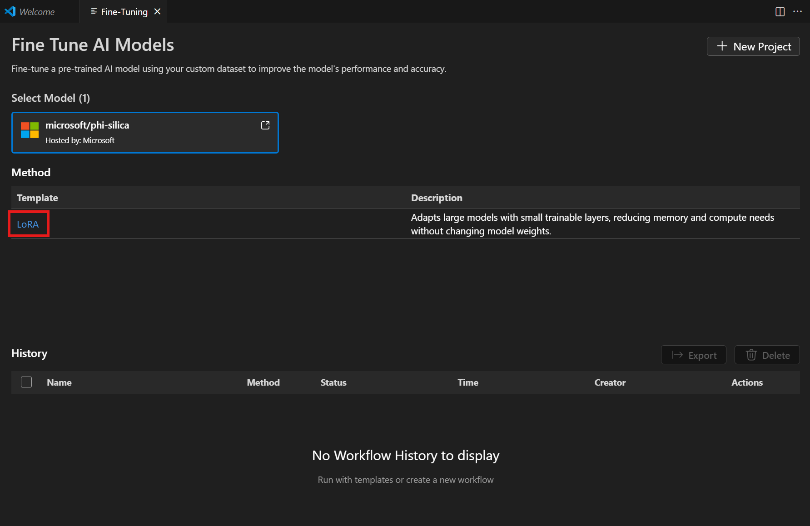
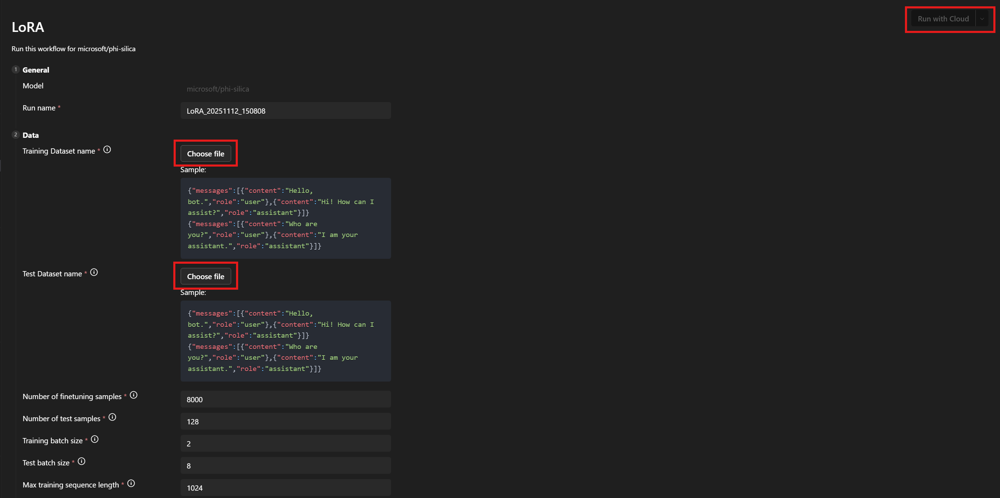
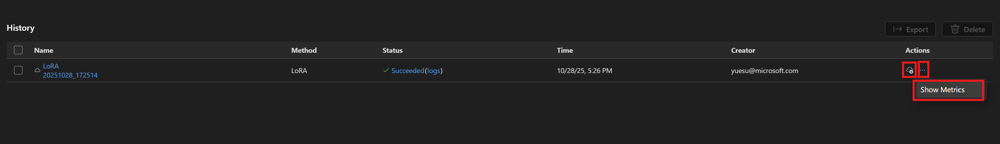

Phi Silica 的 LoRA 微调
你可以使用低秩适配（LoRA）来微调 Phi Silica 模型，以提升其在特定场景下的性能。通过使用 LoRA 优化 Phi Silica（Microsoft Windows 本地语言模型），你可以获得更准确的结果。此过程包括训练一个 LoRA 适配器，然后在推理时应用它来提高模型的准确性。
[!NOTE]
Phi Silica 功能在中国地区不可用。
先决条件
- 你已确定了增强 Phi Silica 回复的用例。
- 你已选择了评估标准来决定什么是“好的回复”。
- 你已尝试使用 Phi Silica API，但发现它们未达到你的评估标准。
训练适配器
若要训练用于在 Windows 11 上微调 Phi Silica 模型的 LoRA 适配器，必须先生成训练过程将使用的数据集。
生成用于 LoRA 适配器的数据集
要生成数据集，你需要将数据拆分为两个文件：
train.json：用于训练适配器。test.json：用于在训练期间和训练后评估适配器的性能。
这两个文件必须使用 JSON 格式，其中每一行都是一个独立的 JSON 对象，代表一个单独的样本。每个样本应包含用户与助手之间交换的消息列表。
每个消息对象需要两个字段：
content：消息文本。role："user"或"assistant"，表示发送者。
请参见以下示例：
{"messages": [{"content": "Hello, how do I reset my password?", "role": "user"}, {"content": "To reset your password, go to the settings page and click 'Reset Password'.", "role": "assistant"}]}
{"messages": [{"content": "Can you help me find nearby restaurants?", "role": "user"}, {"content": "Sure! Here are some restaurants near your location: ...", "role": "assistant"}]}
{"messages": [{"content": "What is the weather like today?", "role": "user"}, {"content": "Today's forecast is sunny with a high of 25°C.", "role": "assistant"}]}训练提示：
- 每条样本行的末尾不需要逗号。
- 尽可能包含高质量且多样化的示例。为了获得最佳效果，请在
train.json文件中至少收集数千个训练样本。 test.json文件可以小一些，但应涵盖你希望模型处理的交互类型。- 创建
train.json和test.json文件时，每行一个 JSON 对象，每个对象包含一段简短的用户与助手之间的来回对话。数据的质量和数量将极大地影响 LoRA 适配器的效果。训练 LoRA 适配器
要训练 LoRA 适配器，你需要以下必需前提条件：
- 具有 Azure Container Apps 中可用配额的 Azure 订阅。
- 我们建议使用 A100 GPU 或更高级别的 GPU 来高效运行微调作业。
- 在 Azure 门户中检查你是否有可用的配额。如果你需要帮助查找配额，请参见查看配额。
- 我们建议使用 A100 GPU 或更高级别的 GPU 来高效运行微调作业。
按照以下步骤创建工作区并启动微调作业：
- 导航到模型工具 > 微调，然后选择新建项目。
- 从模型目录中选择 "microsoft/phi-silica"，然后选择下一步。
- 在对话框中，选择一个项目文件夹并输入项目名称。此时将打开一个新的 VS Code 窗口用于此项目。

- 从方法列表中选择 "LoRA"。

- 在数据 > 训练数据集名称和测试数据集名称下，选择你的
train.json和test.json文件。 - 选择在云端运行。

- 在对话框中，选择用于访问 Azure 订阅的 Microsoft 帐户。
- 选择帐户后，从订阅下拉菜单中选择一个资源组。
- 请注意，你的微调作业已成功启动并显示作业状态。
使用刷新按钮手动更新状态。微调作业通常平均需要 45 - 60 分钟才能完成。
- 作业完成后，你可以选择下载来下载新训练的 LoRA 适配器，并选择显示指标来查看微调指标。

LoRA 微调建议
超参数选择
为 LoRA 微调设置的默认超参数应能提供一个合理的基线微调结果以供比较。我们已尽力找到了适用于大多数场景和数据集的默认值。
不过，我们也为你保留了自定义参数搜索的灵活性。
训练超参数
我们的标准参数搜索空间如下：
| 参数名称 | 最小值 | 最大值 | 分布类型 | ||
|---|---|---|---|---|---|
| -------------- | ----- | ------ | ------------- | ||
| learning_rate | 1e-4 | 1e-2 | 对数均匀分布 | ||
| weight_decay | 1e-5 | 1e-1 | 对数均匀分布 | ||
| adam_beta1 | 0.9 | 0.99 | 均匀分布 | ||
| adam_beta2 | 0.9 | 0.999 | 均匀分布 | ||
| adam_epsilon | 1e-9 | 1e-6 | 对数均匀分布 | ||
| num_warmup_steps | 0 | 10000 | 均匀分布 | ||
| lora_dropout | 0 | 0.5 | 均匀分布 |
我们还对学习率调度器进行了搜索，可选择 linear_with_warmup 或 cosine_with_warmup。如果 num_warmup_steps 参数设置为 0，则你可以等效地使用 linear 或 cosine 选项。
学习率、学习率调度器和预热步数三者之间相互影响。保持其中两个固定而改变第三个，可以帮助你更好地了解它们如何改变在数据集上训练的输出结果。
权重衰减和 LoRA dropout 参数有助于控制过拟合。如果你发现适配器在训练集到评估集上的泛化效果不佳，可以尝试增加这些参数的值。
adam_ 参数影响 Adam 优化器在训练步骤中的行为。有关该优化器的更多信息，请参见 PyTorch 文档。
许多其他暴露的参数与 PEFT 库中的同名参数类似。有关这些参数的更多信息，请参见 transformers 文档。
数据超参数
数据超参数 train_nsamples 和 test_nsamples 分别控制用于训练和测试的样本数量。通常，使用更多训练集样本是一个好主意。使用更多测试样本可以让测试指标的噪声更少，但每次评估运行会花费更长的时间。
train_batch_size 和 test_batch_size 参数分别控制训练和测试中每个批次的样本数量。通常测试可以使用比训练更多的批次，因为运行测试示例比训练示例消耗更少的 GPU 内存。
train_seqlen 和 test_seqlen 参数控制训练和测试序列的长度。一般来说，在达到 GPU 内存限制之前，序列越长越好。默认值应能提供一个良好的平衡。
选择系统提示
我们发现，在选择用于训练的系统提示时，一个有效的策略是保持其相当简洁（1 或 2 句话），同时仍然鼓励模型生成你想要的输出格式。我们还发现，在训练和推理时使用略微不同的系统提示可以改善结果。
你期望的输出与基础模型的差异越大，系统提示能提供的帮助就越多。
例如，如果你只是训练模型进行轻微的风格变化，比如使用简化语言来吸引年轻读者，你可能根本不需要系统提示。
然而，如果你期望的输出具有更多结构，那么你将希望使用系统提示来让模型部分达到目标。所以，如果你需要一个包含特定键的 JSON 表格，系统提示的第一句话可以描述如果模型以自然语言回复应该是怎样的。第二句话可以更具体地说明 JSON 表格格式应该是什么样子。在训练中使用第一句话，然后在推理时使用两句话，可能会带给你期望的结果。
参数
以下是所有可微调的参数列表。如果某个参数未出现在工作流程页面 UI 中，请手动将其添加到
[
################## 基本配置设置 ##################
{
"groupId": "data",
"fields": [
{
"name": "system_prompt",
"type": "Optional",
"defaultValue": null,
"info": "可选的系统提示。如果指定，此处给出的系统提示将在训练 LoRA 适配器时作为系统提示追加到数据集的每个示例之前。运行推理时应使用相同（或非常相似）的系统提示。注意：如果训练数据中已指定了系统提示，则在此处提供系统提示将覆盖数据集中的系统提示。",
"label": "系统提示"
},
{
"name": "varied_seqlen",
"type": "bool",
"defaultValue": false,
"info": "校准数据中的可变序列长度。如果为 False（默认），训练示例将被拼接在一起，直到达到 finetune_[train/test]_seqlen 个 token。这使内存使用更加一致和可预测。如果为 True，每个单独的示例将被截断为 finetune_[train/test]_seqlen 个 token。这有时可以提供更好的训练性能，但也会导致不可预测的内存使用。如果数据集中有很长的训练示例，它可能会导致训练中途出现 `out of memory` 错误。",
"label": "允许数据中的可变序列长度"
},
{
"name": "finetune_dataset",
"type": "str",
"defaultValue": "wikitext2",
"info": "用于微调的数据集。",
"label": "数据集名称或路径"
},
{
"name": "finetune_train_nsamples",
"type": "int",
"defaultValue": 4096,
"info": "从训练集中加载用于微调的样本数量。",
"label": "微调样本数量"
},
{
"name": "finetune_test_nsamples",
"type": "int",
"defaultValue": 128,
"info": "从测试集中加载用于微调的样本数量。",
"label": "测试样本数量"
},
{
"name": "finetune_train_batch_size",
"type": "int",
"defaultValue": 4,
"info": "微调训练的批次大小。",
"label": "训练批次大小"
},
{
"name": "finetune_test_batch_size",
"type": "int",
"defaultValue": 8,
"info": "微调测试的批次大小。",
"label": "测试批次大小"
},
{
"name": "finetune_train_seqlen",
"type": "int",
"defaultValue": 2048,
"info": "微调训练的最大序列长度。更长的序列将被截断。",
"label": "最大训练序列长度"
},
{
"name": "finetune_test_seqlen",
"type": "int",
"defaultValue": 2048,
"info": "微调测试的最大序列长度。更长的序列将被截断。",
"label": "最大测试序列长度"
}
]
},
{
"groupId": "finetuning",
"fields": [
{
"name": "early_stopping_patience",
"type": "int",
"defaultValue": 5,
"info": "连续多次评估没有改善后训练将停止的次数。",
"label": "早停耐心值"
},
{
"name": "epochs",
"type": "float",
"defaultValue": 1,
"info": "要运行的训练总轮数。",
"label": "训练轮数"
},
{
"name": "eval_steps",
"type": "int",
"defaultValue": 64,
"info": "每次评估之前要执行的训练步数。",
"label": "评估间隔步数"
},
{
"name": "save_steps",
"type": "int",
"defaultValue": 64,
"info": "保存模型检查点所需的步数间隔。此值必须为评估间隔步数的倍数。",
"label": "检查点间隔步数"
},
{
"name": "learning_rate",
"type": "float",
"defaultValue": 0.0002,
"info": "训练的学习率。",
"label": "学习率"
},
{
"name": "lr_scheduler_type",
"type": "str",
"defaultValue": "linear",
"info": "学习率调度器类型。",
"label": "学习率调度器",
"optionValues": [
"linear",
"linear_with_warmup",
"cosine",
"cosine_with_warmup"
]
},
{
"name": "num_warmup_steps",
"type": "int",
"defaultValue": 400,
"info": "学习率调度器的预热步数。仅适用于 _with_warmup 类型的调度器。",
"label": "调度器预热步数（如支持）"
}
]
}
################## 高级配置设置 ##################
{
"groupId": "advanced",
"fields": [
{
"name": "seed",
"type": "int",
"defaultValue": 42,
"info": "数据采样的随机种子。",
"label": "随机种子"
},
{
"name": "evaluation_strategy",
"type": "str",
"defaultValue": "steps",
"info": "要使用的评估策略。",
"label": "评估策略",
"optionValues": [
"steps",
"epoch",
"no"
]
},
{
"name": "lora_dropout",
"type": "float",
"defaultValue": 0.1,
"info": "LoRA 的 dropout 率。",
"label": "LoRA dropout"
},
{
"name": "adam_beta1",
"type": "float",
"defaultValue": 0.9,
"info": "Adam 优化器的 Beta1 超参数。",
"label": "Adam beta 1"
},
{
"name": "adam_beta2",
"type": "float",
"defaultValue": 0.95,
"info": "Adam 优化器的 Beta2 超参数。",
"label": "Adam beta 2"
},
{
"name": "adam_epsilon",
"type": "float",
"defaultValue": 1e-08,
"info": "Adam 优化器的 Epsilon 超参数。",
"label": "Adam epsilon"
},
{
"name": "num_training_steps",
"type": "Optional",
"defaultValue": null,
"info": "训练步数。如果未设置（推荐），将在内部自动计算。",
"label": "训练步数"
},
{
"name": "gradient_accumulation_steps",
"type": "int",
"defaultValue": 1,
"info": "执行反向/更新传递之前要累积的更新步数。",
"label": "梯度累积步数"
},
{
"name": "eval_accumulation_steps",
"type": "Optional",
"defaultValue": null,
"info": "在将张量移至 CPU 之前要累积的预测步数。",
"label": "评估累积步数"
},
{
"name": "eval_delay",
"type": "Optional",
"defaultValue": 0,
"info": "根据评估策略，在第一次评估执行之前需要等待的轮数或步数。",
"label": "评估延迟"
},
{
"name": "weight_decay",
"type": "float",
"defaultValue": 0.0,
"info": "如果应用 AdamW 时的权重衰减。",
"label": "权重衰减"
},
{
"name": "max_grad_norm",
"type": "float",
"defaultValue": 1.0,
"info": "最大梯度范数。",
"label": "最大梯度范数"
},
{
"name": "gradient_checkpointing",
"type": "bool",
"defaultValue": false,
"info": "如果为 True，使用梯度检查点来节省内存，但会减慢反向传递。",
"label": "梯度检查点"
}
]
}
]修改 Azure 订阅和资源组
如果你想要修改之前设置的 Azure 订阅和资源组，可以在
使用 Phi Silica LoRA 适配器进行推理
[!IMPORTANT]
Phi Silica API 属于受限访问功能的一部分（请参见 LimitedAccessFeatures 类）。有关更多信息或申请解锁令牌，请使用 LAF 访问令牌申请表。
[!NOTE]
目前仅支持在搭载 ARM 处理器的 Copilot+ PC 上使用 Phi Silica LoRA 适配器进行推理。
使用 Windows AI API 进行推理：Phi Silica with LoRA adapter